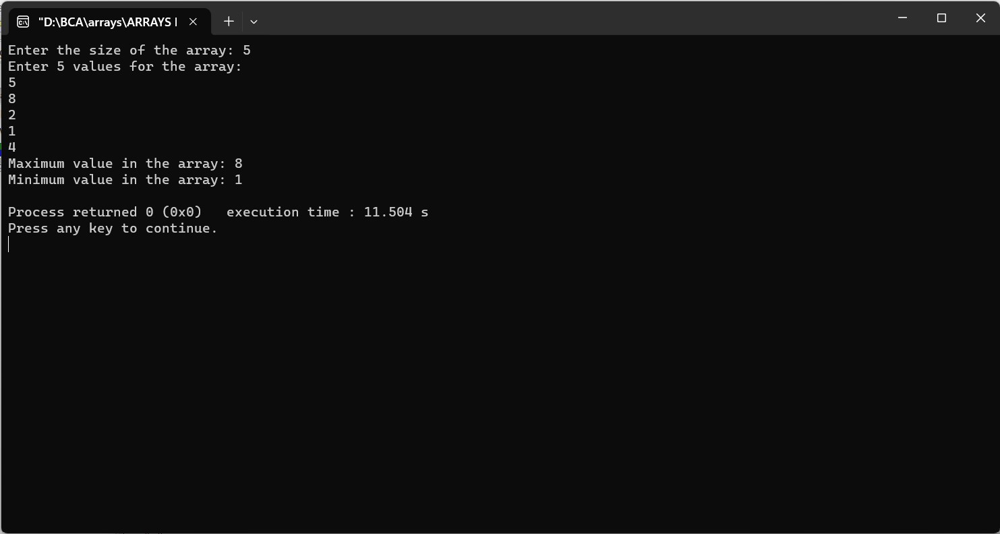

Enter an array from user and find maximum and minimum value
#include
int main() {
int size;
printf("Enter the size of the array: ");
scanf("%d", &size);
int arr[size];
printf("Enter %d values for the array:\n", size);
for (int i = 0; i < size; i++) {
scanf("%d", &arr[i]);
}
int max = arr[0];
int min = arr[0];
for (int i = 1; i < size; i++) {
if (arr[i] > max) {
max = arr[i];
}
if (arr[i] < min) {
min = arr[i];
}
}
printf("Maximum value in the array: %d\n", max);
printf("Minimum value in the array: %d\n", min);
return 0;
}
